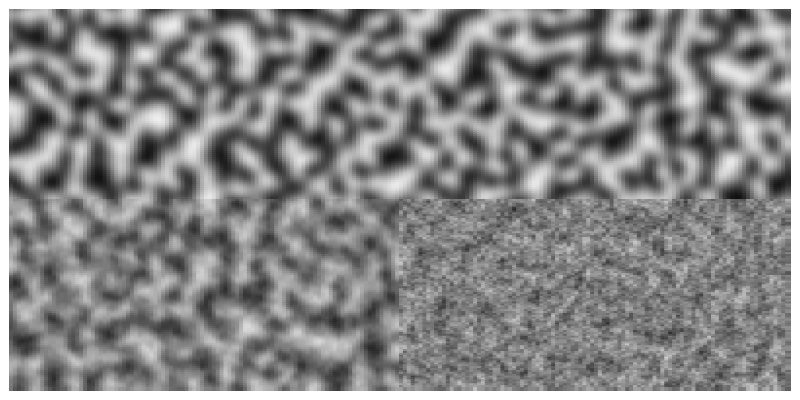

Geometry tools
Lines and distances
You can find the midpoint between two points using midpoint().
The following code places a small pentagon (using ngon()) at the midpoint of each side of a larger pentagon:
sethue("red")
ngon(O, 100, 5, 0, :stroke)
sethue("darkgreen")
p5 = ngon(O, 100, 5, 0, vertices=true)
for i in eachindex(p5)
pt1 = p5[mod1(i, 5)]
pt2 = p5[mod1(i + 1, 5)]
ngon(midpoint(pt1, pt2), 20, 5, 0, :fill)
end
A more general function, between(), finds for a value x between 0 and 1 the corresponding point on a line defined by two points. So midpoint(p1, p2) and between(p1, p2, 0.5) should return the same point.
sethue("red")
p1 = Point(-150, 0)
p2 = Point(150, 40)
line(p1, p2)
strokepath()
for i in -0.5:0.1:1.5
randomhue()
circle(between(p1, p2, i), 5, :fill)
end
Values less than 0.0 and greater than 1.0 appear to work well too, placing the point on the line if extended.
Luxor.midpoint — Functionmidpoint(p1, p2)Find the midpoint between two points.
midpoint(a)Find midpoint between the first two elements of an array of points.
midpoint(bb::BoundingBox)Returns the point midway between the two points of the BoundingBox. This should also be the center, unless I've been very stupid...
Luxor.between — Functionbetween(p1::Point, p2::Point, x)
between((p1::Point, p2::Point), x)Find the point between point p1 and point p2 for x, where x is typically between 0 and 1. between(p1, p2, 0.5) is equivalent to midpoint(p1, p2).
between(bb::BoundingBox, x)Find a point between the two corners of a BoundingBox corresponding to x, where x is typically between 0 and 1.
center3pts() finds the radius and center point of a circle passing through three points which you can then use with functions such as circle() or arc2r().
getnearestpointonline() finds perpendiculars.
end1, end2, pt3 = ngon(O, 100, 3, vertices=true)
circle.([end1, end2, pt3], 5, :fill)
line(end1, end2, :stroke)
arrow(pt3, getnearestpointonline(end1, end2, pt3))
Points and arcs
Use isarcclockwise(c, p1, p2) to check whether an arc centered at c running from p1 to p2 is clockwise.
The pointinverse() function finds the inverse of a point relative to a reference circle (centerpoint and radius). In the image, each vertex on the star is linked by an arrow to its inverse.
radius = 80
starradius = 70
sethue("black")
points = star(O, starradius, 5, 0.5, π/5, vertices=true)
antipoints = last.(pointinverse.(points, O, radius))
@layer (sethue("grey90"); poly(antipoints, :fill))
@layer (sethue("grey75"); poly(points, :fill))
circle(O, radius, :stroke)
prettypoly.((points, antipoints), :none,
vertexlabels = (n, l) -> (label(string(n), :ne)))
foreach(x -> arrow(x[1] , x[2]), zip(points, antipoints))
Luxor.distance — Functiondistance(p1::Point, p2::Point)Find the distance between two points (two argument form).
Luxor.getnearestpointonline — Functiongetnearestpointonline(pt1::Point, pt2::Point, startpt::Point)Given a line from pt1 to pt2, and startpt is the start of a perpendicular heading to meet the line, at what point does it hit the line?
Luxor.pointlinedistance — Functionpointlinedistance(p::Point, a::Point, b::Point)Find the distance between a point p and a line between two points a and b.
Luxor.slope — Functionslope(pointA::Point, pointB::Point)Find angle of a line starting at pointA and ending at pointB.
Return a value between 0 and 2pi. Value will be relative to the current axes.
slope(O, Point(0, 100)) |> rad2deg # y is positive down the page
90.0
slope(Point(0, 100), O) |> rad2deg
270.0Luxor.perpendicular — Functionperpendicular(p1, p2, k)Return a point p3 that is k units away from p1, such that a line p1 p3 is perpendicular to p1 p2.
Convention? to the right?
perpendicular(p::Point)Returns point Point(p.y, -p.x).
Luxor.dotproduct — Functiondotproduct(a::Point, b::Point)Return the scalar dot product of the two points.
Luxor.@polar — Macro@polar (p)Convert a tuple of two numbers to a Point of x, y Cartesian coordinates.
@polar (10, pi/4)
@polar [10, pi/4]produces
Luxor.Point(7.0710678118654755, 7.071067811865475)Luxor.polar — Functionpolar(r, theta)Convert point in polar form (radius and angle) to a Point.
polar(10, pi/4)produces
Luxor.Point(7.071067811865475, 7.0710678118654755)Luxor.ispointonline — Functionispointonline(pt::Point, pt1::Point, pt2::Point;
extended = false,
atol = 10E-5)Return true if the point pt lies on a straight line between pt1 and pt2.
If extended is false (the default) the point must lie on the line segment between pt1 and pt2. If extended is true, the point lies on the line if extended in either direction.
Luxor.isarcclockwise — Functionisarcclockwise(c::Point, A::Point, B::Point)Return true if an arc centered at c going from A to B is clockwise.
If c, A, and B are collinear, then a hemispherical arc could be either clockwise or not.
Luxor.pointinverse — Functionpointinverse(A::Point, centerpoint::Point, rad)Find A′, the inverse of a point A with respect to a circle centerpoint/rad, such that:
distance(centerpoint, A) * distance(centerpoint, A′) == rad^2Return (true, A′) or (false, A).
Intersections
intersectionlines() finds the intersection of two lines.
sethue("black")
P1, P2, P3, P4 = ngon(O, 100, 5, vertices=true)
label.(["P1", "P2", "P3", "P4"], :N, [P1, P2, P3, P4])
line(P1, P2, :stroke)
line(P4, P3, :stroke)
flag, ip = intersectionlines(P1, P2, P4, P3)
if flag
circle(ip, 5, :fill)
end
intersectionlinecircle() finds the intersection of a line and a circle. There can be 0, 1, or 2 intersection points.
l1 = Point(-100.0, -75.0)
l2 = Point(300.0, 100.0)
rad = 100
cpoint = Point(0, 0)
line(l1, l2, :stroke)
circle(cpoint, rad, :stroke)
nints, ip1, ip2 = intersectionlinecircle(l1, l2, cpoint, rad)
sethue("black")
if nints == 2
circle(ip1, 8, :stroke)
circle(ip2, 8, :stroke)
end
intersection2circles() finds the area of the intersection of two circles, and intersectioncirclecircle() finds the points where they cross.
This example shows the areas of two circles, and the area of their intersection.
c1 = (O, 150)
c2 = (O + (100, 0), 150)
circle(c1... , :stroke)
circle(c2... , :stroke)
sethue("purple")
circle(c1... , :clip)
circle(c2... , :fill)
clipreset()
sethue("black")
text(string(150^2 * π |> round), c1[1] - (125, 0))
text(string(150^2 * π |> round), c2[1] + (100, 0))
sethue("white")
text(string(intersection2circles(c1..., c2...) |> round),
midpoint(c1[1], c2[1]), halign=:center)
sethue("red")
flag, C, D = intersectioncirclecircle(c1..., c2...)
if flag
circle.([C, D], 5, :fill)
end
Luxor.intersectionlines — Functionintersectionlines(p0, p1, p2, p3,
crossingonly=false)Find point where two lines intersect.
If crossingonly == true the point of intersection must lie on both lines.
If crossingonly == false the point of intersection can be where the lines meet if extended almost to 'infinity'.
Accordng to this function, collinear, overlapping, and parallel lines never intersect. Ie, the line segments might be collinear but have no points in common, or the lines segments might be collinear and have many points in common, or the line segments might be collinear and one is entirely contained within the other.
If the lines are collinear and share a point in common, that is the intersection point.
Luxor.intersectionlinecircle — Functionintersectionlinecircle(p1::Point, p2::Point, cpoint::Point, r)Find the intersection points of a line (extended through points p1 and p2) and a circle.
Return a tuple of (n, pt1, pt2)
where
nis the number of intersections,0,1, or2pt1is first intersection point, orPoint(0, 0)if nonept2is the second intersection point, orPoint(0, 0)if none
The calculated intersection points won't necessarily lie on the line segment between p1 and p2.
Luxor.intersection2circles — Functionintersection2circles(pt1, r1, pt2, r2)Find the area of intersection between two circles, the first centered at pt1 with radius r1, the second centered at pt2 with radius r2.
If one circle is entirely within another, that circle's area is returned.
Luxor.intersectioncirclecircle — Functionintersectioncirclecircle(cp1, r1, cp2, r2)Find the two points where two circles intersect, if they do. The first circle is centered at cp1 with radius r1, and the second is centered at cp1 with radius r1.
Returns
(flag, ip1, ip2)where flag is a Boolean true if the circles intersect at the points ip1 and ip2. If the circles don't intersect at all, or one is completely inside the other, flag is false and the points are both Point(0, 0).
Use intersection2circles() to find the area of two overlapping circles.
In the pure world of maths, it must be possible that two circles 'kissing' only have a single intersection point. At present, this unromantic function reports that two kissing circles have no intersection points.
Bounding boxes
The BoundingBox type allows you to use rectangular extents to organize and interact with the 2D drawing area. A BoundingBox holds two points, the opposite corners of a bounding box.
You can make a BoundingBox from the current drawing, two points, a text string, an existing polygon, or by modifying an existing one.
BoundingBox() without arguments defines an extent that encloses the drawing (assuming that the origin is at the center of the drawing—see origin()). Use centered=false if the drawing origin is still at the top left corner.
This example draws circles at three points: at two of the drawing's corners and the midway point between them:
origin()
bb = BoundingBox()
setline(10)
sethue("orange")
circle(bb[1], 150, :stroke) # first corner
circle(bb[2], 150, :stroke) # second corner
circle(midpoint(bb...), 150, :stroke) # midpoint
sethue("blue")
circle.([bb[1], midpoint(bb[1:2]), bb[2]], 130, :fill)
sethue("red")
circle.([first(bb), midpoint(bb...), last(bb)], 100, :fill)
You can make a bounding box from a polygon:
p = star(O, 100, 5, 0.1, π/3.3, vertices=true)
sethue("antiquewhite")
box(BoundingBox(p), :fill)
sethue("black")
poly(p, :stroke, close=true)
The resulting bounding box objects can be passed to box() or poly() to be drawn.
Pass a bounding box to midpoint() to find its center point. The functions boxbottom(), boxheight(), boxtop(), boxaspectratio(), boxdiagonal(), and boxwidth() return information about a bounding box.
To convert a bounding box b into a box, use box(b, vertices=true) or convert(Vector{Point}, BoundingBox()).
You can also do some arithmetic on bounding boxes. In the next example, the bounding box is created from the text "good afternoon". The bounding box is filled with purple, then increased by 40 units on all sides (blue), also scaled by 1.3 (green), and also shifted by (0, 100) (orange).
translate(-130,0)
fontsize(40)
str = "good afternoon"
sethue("purple")
box(BoundingBox(str), :fill)
sethue("white")
text(str)
sethue("blue")
modbox = BoundingBox(str) + 40 # add 40 units to all sides
poly(modbox, :stroke, close=true)
sethue("green")
modbox = BoundingBox(str) * 1.3
poly(modbox, :stroke, close=true)
sethue("orange")
modbox = BoundingBox(str) + (0, 100)
poly(modbox, :fill, close=true)
You can find the union and intersection of BoundingBoxes, and also find whether a point lies inside one. The following code creates, shrinks, and shifts two bounding boxes (colored yellow and pink), and then draws: their union (a bounding box that includes both), in black outline; and their intersection (a bounding box of their common areas), in red. Then some random points are created (you can pass a bounding box to rand() to get a random point inside the box) and drawn differently depending on whether they're inside the intersection or outside.
origin()
setopacity(0.75)
setline(8)
bbox1 = BoundingBox()/2 - (50, 30)
sethue("yellow")
box(bbox1, :fill)
bbox2 = BoundingBox()/2 + (50, 30)
sethue("pink")
box(bbox2, :fill)
sethue("black")
box(bbox1 + bbox2, :stroke)
sethue("red")
bothboxes = intersectboundingboxes(bbox1, bbox2)
box(bothboxes, :fill)
for i in 1:500
pt = rand(bbox1 + bbox2)
if isinside(pt, bothboxes)
sethue("white")
circle(pt, 3, :fill)
else
sethue("black")
circle(pt, 2, :fill)
end
end
To find out where a line starting at the center of a bounding box passing through a point crosses or would cross the edges of the box, use pointcrossesboundingbox().
bx = BoundingBox(box(O, 200, 200, :none))
setline(1)
box(bx, :stroke)
for i in 1:10
pt = randompoint((1.5bx)...)
pt2 = pointcrossesboundingbox(pt, bx)
sethue("grey50")
arrow(O, pt)
sethue("red")
circle(pt2, 3, :stroke)
end
Luxor.boxaspectratio — Functionboxaspectratio(bb::BoundingBox)Return the aspect ratio (the height divided by the width) of bounding box bb.
Luxor.boxdiagonal — Functionboxdiagonal(bb::BoundingBox)Return the length of the diagonal of bounding box bb.
Luxor.boxwidth — Functionboxwidth(bb::BoundingBox)Return the width of bounding box bb.
Luxor.boxheight — Functionboxheight(bb::BoundingBox)Return the height of bounding box bb.
Luxor.intersectboundingboxes — Functionintersectboundingboxes(bb1::BoundingBox, bb2::BoundingBox)Return a BoundingBox that's an intersection of the two bounding boxes.
Luxor.pointcrossesboundingbox — Functionpointcrossesboundingbox(pt, bbox::BoundingBox)Find and return the point where a line from the center of bounding box bbox to point pt would, if continued, cross the edges of the box.
Luxor.boxbottomleft — Functionboxbottomleft(bb::BoundingBox)Return the point at the bottom left of the BoundingBox bb.
⋅ ⋅ ⋅
⋅ ⋅ ⋅
■ ⋅ ⋅Luxor.boxbottomright — Functionboxbottomright(bb::BoundingBox)Return the point at the bottom right of the BoundingBox bb.
⋅ ⋅ ⋅
⋅ ⋅ ⋅
⋅ ⋅ ■Luxor.boxmiddlecenter — Functionboxmiddlecenter(bb::BoundingBox)Return the point at the center of the BoundingBox bb.
⋅ ⋅ ⋅
⋅ ■ ⋅
⋅ ⋅ ⋅Luxor.boxmiddleleft — Functionboxmiddleleft(bb::BoundingBox)Return the point at the middle left of the BoundingBox bb.
⋅ ⋅ ⋅
■ ⋅ ⋅
⋅ ⋅ ⋅Luxor.boxmiddleright — Functionboxmiddleright(bb::BoundingBox)Return the point at the midde right of the BoundingBox bb.
⋅ ⋅ ⋅
⋅ ⋅ ■
⋅ ⋅ ⋅Luxor.boxtopcenter — Functionboxtopcenter(bb::BoundingBox)Return the point at the top center of the BoundingBox bb.
⋅ ■ ⋅
⋅ ⋅ ⋅
⋅ ⋅ ⋅Luxor.boxtopleft — Functionboxtopleft(bb::BoundingBox)Return the point at the top left of the BoundingBox bb.
■ ⋅ ⋅
⋅ ⋅ ⋅
⋅ ⋅ ⋅Luxor.boxtopright — Functionboxtopright(bb::BoundingBox)Return the point at the top right of the BoundingBox bb.
⋅ ⋅ ■
⋅ ⋅ ⋅
⋅ ⋅ ⋅Noise
For artistic graphics you might prefer noisy input values to purely random ones. Use the noise() function to obtain smoothly changing random values corresponding to input coordinates. The returned values wander slowly rather than jump about everywhere.
In this example, the gray value varies gradually as the noise() function returns values between 0 and 1 depending on the location of the two input values pos.x and pos.y.
The top two quadrants use a lower value for the detail keyword argument, an integer ()>= 1) specifying how many "octaves" of noise you want.
The left two quadrants use a lower value for the persistence keyword argument, a floating point number specifying how the amplitude diminishes for each successive level of detail. There is more fine detail when the persistence is higher, particularly when the detail setting is also high.
tiles = Tiler(800, 400, 200, 200)
sethue("black")
for (pos, n) in tiles
freq = 0.05
pos.y < 0 ? d = 1 : d = 4
pos.x < 0 ? pers = 0.3 : pers = 1.0
ns = noise(freq * pos.x, freq * pos.y,
detail=d,
persistence=pers)
setgray(ns)
box(pos, tiles.tilewidth, tiles.tileheight, :fillstroke)
end
Luxor.noise — Functionnoise(x) ; detail = 1, persistence = 1.0) # 1D
noise(x, y) ; detail = 1, persistence = 1.0) # 2D
noise(x, y, z) ; detail = 1, persistence = 1.0) # 3D
noise(x, y, z, w) ; detail = 1, persistence = 1.0) # 4DGenerate a noise value between 0.0 and 1.0 corresponding to the x, y, z, and w values. An x value on its own produces 1D noise, x and y make 2D noise, and so on.
The detail value is an integer (>= 1) specifying how many octaves of noise you want.
The persistence value, typically between 0.0 and 1.0, controls how quickly the amplitude diminishes for each successive octave for values of detail greater than 1.
Luxor.initnoise — Functioninitnoise(seed::Int)
initnoise()Initialize the noise generation code.
julia> initnoise(); noise(1)
0.7453148982810598
julia> initnoise(); noise(1)
0.7027617067916981If you provide an integer seed, it will be used to seed Random.seed!()` when the noise code is initialized:
julia> initnoise(41); noise(1) # yesterday
0.7134000046640385
julia> initnoise(41); noise(1) # today
0.7134000046640385